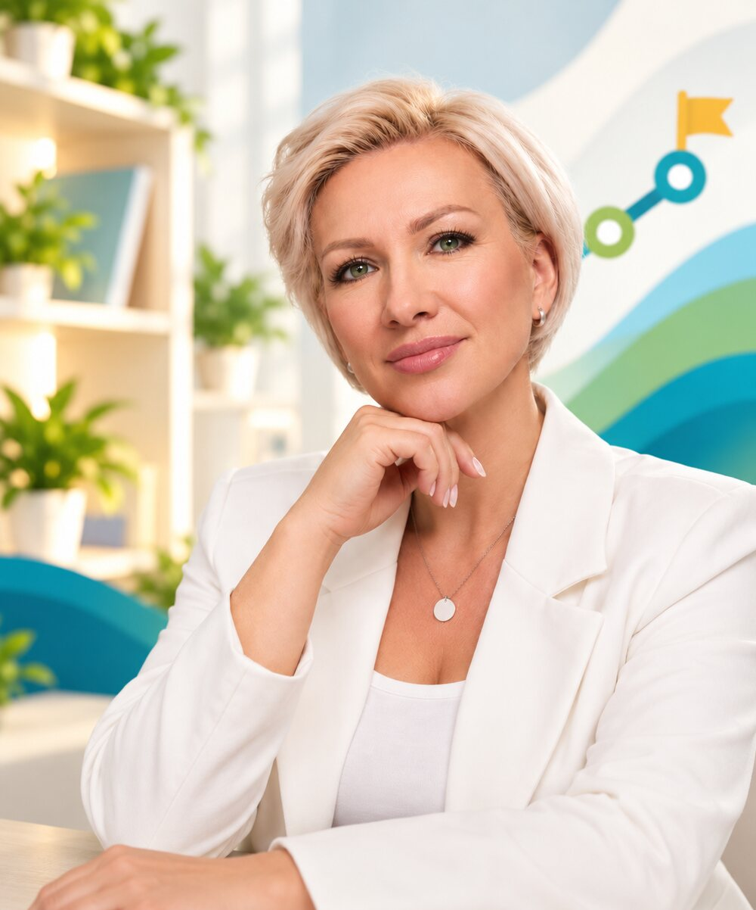

Руководитель и основатель центра
Записаться к Нине Сергеевне
Подробнее о руководителе →
Туманова Нина Сергеевна
Психология • Нейропсихология • Миология речи • Нейробиоуправление • Медицинская база
Образование
Медицинское образование. Завершила обучение в институте Сеченова по направлению «Биохакинг для оздоровления современного поколения».
Специализации
Логопед-дефектолог высшей категории
Специальный психолог, нейропсихолог, миологопед, специалист по нейробиоуправлению.